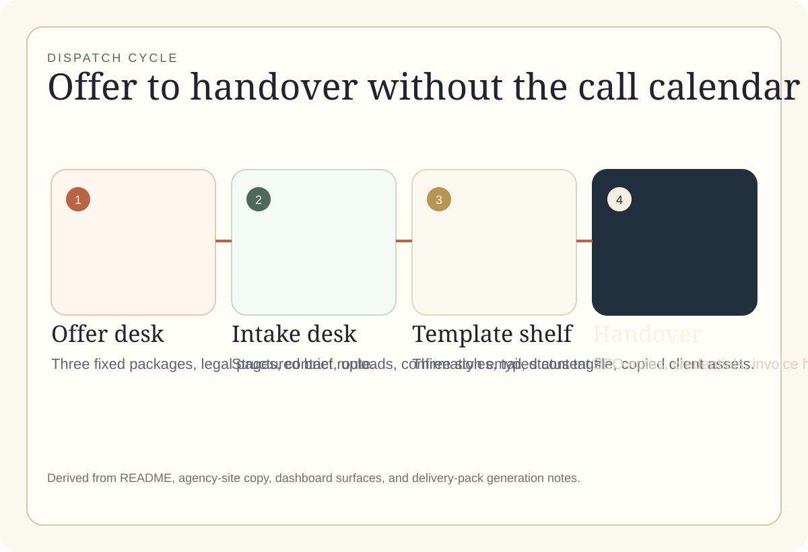
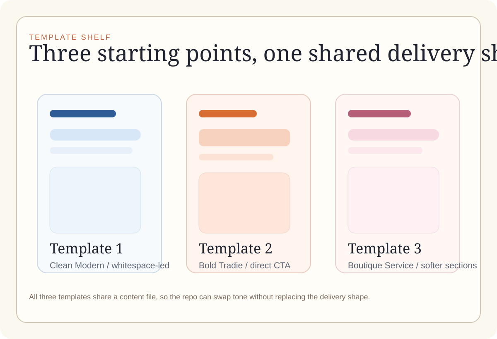

Why it exists
The repo is explicit about a no-call workflow: intake happens by form, confirmation happens by email, and deliverables are documented instead of improvised.
Async launch desk / Web operating kit
This repo combines a package site, intake desk, template shelf, and handover kit into one repeatable flow. It is built for productized website work where forms and email replace call-heavy setup.
01
LaunchPack Web Studio is a working system for selling and delivering fixed-scope websites. The public side explains the offers, the intake side captures the brief, and the generator side turns that brief into a prepared client site and handover pack.
The repo is explicit about a no-call workflow: intake happens by form, confirmation happens by email, and deliverables are documented instead of improvised.
It suits solo studios and micro-agencies that want structure for repeatable website launches without rebuilding their process for every client.
The repo includes fixed offers, template choices, upload-aware intake, status tags, delivery-pack generation, and static export notes for simpler builds.
02
The product is strongest when read as a set of connected working parts rather than as a single page or app.
The agency site presents three fixed offers, demo portfolio slots, template directions, legal pages, and contact routes.
The intake flow records business details, package choice, preferred template, upload assets, and deadline notes, then confirms by email.
Three client-site starting points ship with a shared content schema: Clean Modern, Bold Tradie, and Boutique Service.
Generation does not stop at HTML. The repo also prepares credentials notes, SEO checklists, handover email text, and a site URL placeholder.
03
The repo’s process cadence is simple and observable: scope by intake, confirm by email, build from templates, then hand off with documented deliverables.
04
No polished screenshots were committed to the repo, so this export uses repo-derived diagrams instead of pretending to show a live marketing capture.


05
The repo gives enough concrete evidence to describe its scope without inventing usage numbers or launch claims.
Status: active build
06
These answers stick to what the repo actually supports today.
It is both. The repo contains a public package site and an internal dashboard that stores submissions, tracks status, and generates client-site folders.
No. The repo copy is explicit that intake and follow-up happen through forms and email rather than phone or headset work.
Yes, within limits. The deployment notes call out a GitHub Pages fallback for Offer A style static exports, while the fuller workflow uses server-side features.
Not in the checked-in public-safe materials used for this export. The visual section uses diagrams derived from repo structure instead.
Final call
LaunchPack Web Studio reads best as an operational kit: offers in front, structured intake in the middle, templates on the shelf, and handover notes at the end.